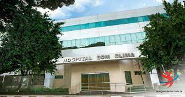

Hospital Carlos Chagas

Endereço : R. Barão de Mauá, 100 - Centro, Guarulhos
Como ChegarO Hospital Carlos Chagas começou em 1962, como um modesto pronto-socorro de apenas quatro leitos. Em 1964, com 12 leitos, passou a chamar-se Pronto-Socorro e Maternidade Guarulhos. Em 1969, passou a chamar-se Hospital Carlos Chagas. Em 1973, o hospital criou a Seisa.
Hospital Bom Clima
Endereço : Av. Mariana Ubaldina do Espírito Santo, 654 - Jardim Bom Clima, Guarulhos
Como ChegarO Hospital Bom Clima Saúde foi fundado em 2001 para oferecer os melhores planos de saúde com o melhor custo/benefício, recursos próprios e próximos aos seus pacientes na região de Guarulhos, São Paulo.